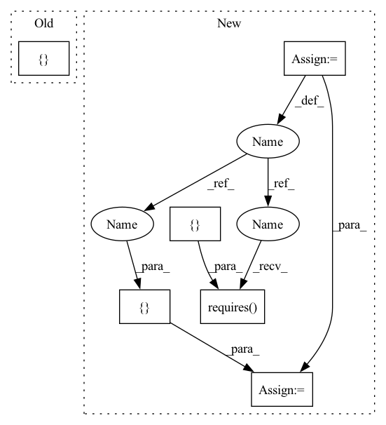

Pattern ID :34365

Before Change
// 1 -> 2 -> 4
// \- 3 /
// 5
tasks = [
MyTask(1, pre_task_ids=[], post_task_ids=[2, 3]),
MyTask(2, pre_task_ids=[1], post_task_ids=[4]),
MyTask(3, pre_task_ids=[1], post_task_ids=[4]),
MyTask(4, pre_task_ids=[2, 3], post_task_ids=[]),
MyTask(5, pre_task_ids=[], post_task_ids=[]),
]
with Swarm(n_bees=3, refresh_every=5) as swarm:
After Change
// create tasks
task_1 = MyTask(1, "MyTask")
task_2 = MyTask(2, "MyTask")
task_3 = MyTask(3, "MyTask")
task_4 = MyTask(4, "MyTask")
task_5 = MyTask(5, "MyTask")
// add dependencies
task_2.requires([task_1])
task_3.requires([task_1])
task_4.requires([task_2, task_3])
// final list of tasks
tasks = [task_1, task_2, task_3, task_4, task_5]
with Swarm(n_bees=3, refresh_every=5) as swarm:
results = swarm.work(tasks)
In pattern: SUPERPATTERN
Frequency: 3
Non-data size: 6
Instances
Fragment ID: 98612993
Project Name: fluidml/fluidml
Commit Name: 308b47a327a0187e20da06cc7fe14e2963e65536
Time: 2020-09-01
Author: raj1514@gmail.com
File Name: demo_scripts/test_with_dependencies.py
M Class Name: AnonimousClass
N Class Name: AnonimousClass
M Method Name: main(0)
N Method Name: main(0)
M Parent Class:
N Parent Class:
M File Name: demo_scripts/test_with_dependencies.py
N File Name: demo_scripts/test_with_dependencies.py
M Start Line: 19
M End Line: 25
N Start Line: 21
N End Line: 33
'>
Before Change
def main():
tasks = [
DatasetFetchTask(1, pre_task_ids=[], post_task_ids=[2, 3, 5]),
PreProcessTask(2, pre_task_ids=[1], post_task_ids=[3]),
FeaturizeTask(3, pre_task_ids=[2], post_task_ids=[4, 5]),
TrainTask(4, pre_task_ids=[1, 3], post_task_ids=[5]),
EvaluateTask(5, pre_task_ids=[1, 3, 4], post_task_ids=[])
]
with Swarm(n_bees=3, refresh_every=5) as swarm:
results = swarm.work(tasks)
After Change
// create all tasks
dataset_fetch_task = DatasetFetchTask(1)
pre_process_task = PreProcessTask(2)
featurize_task = FeaturizeTask(3)
train_task = TrainTask(4)
evaluate_task = EvaluateTask(5)
// dependencies between tasks
pre_process_task.requires([dataset_fetch_task])
featurize_task.requires([pre_process_task])
train_task.requires([dataset_fetch_task, featurize_task])
evaluate_task.requires([dataset_fetch_task, featurize_task, train_task])
// all tasks
tasks = [dataset_fetch_task, pre_process_task, featurize_task, train_task, evaluate_task]
with Swarm(n_bees=3, refresh_every=5) as swarm:
results = swarm.work(tasks)
'>
Fragment ID: 98613012
Project Name: fluidml/fluidml
Commit Name: 308b47a327a0187e20da06cc7fe14e2963e65536
Time: 2020-09-01
Author: raj1514@gmail.com
File Name: demo_scripts/test_with_sentence_classification.py
M Class Name: AnonimousClass
N Class Name: AnonimousClass
M Method Name: main(0)
N Method Name: main(0)
M Parent Class:
N Parent Class:
M File Name: demo_scripts/test_with_sentence_classification.py
N File Name: demo_scripts/test_with_sentence_classification.py
M Start Line: 110
M End Line: 116
N Start Line: 85
N End Line: 98
'>
Before Change
// 1 -> 2 -> 4
// \- 3 /
// 5
tasks = [
MyTask(1, pre_task_ids=[], post_task_ids=[2, 3]),
MyTask(2, pre_task_ids=[1], post_task_ids=[4]),
MyTask(3, pre_task_ids=[1], post_task_ids=[4]),
MyTask(4, pre_task_ids=[2, 3], post_task_ids=[]),
MyTask(5, pre_task_ids=[], post_task_ids=[]),
]
with Swarm(n_bees=3, refresh_every=5) as swarm:
After Change
task_1 = MyTask(1, "MyTask")
task_2 = MyTask(2, "MyTask")
task_3 = MyTask(3, "MyTask")
task_4 = MyTask(4, "MyTask")
task_5 = MyTask(5, "MyTask")
// add dependencies
task_2.requires([task_1])
task_3.requires([task_1])
task_4.requires([task_2, task_3])
// final list of tasks
tasks = [task_1, task_2, task_3, task_4, task_5]
with Swarm(n_bees=3, refresh_every=5) as swarm:
results = swarm.work(tasks)
'>
Fragment ID: 98613014
Project Name: fluidml/fluidml
Commit Name: 308b47a327a0187e20da06cc7fe14e2963e65536
Time: 2020-09-01
Author: raj1514@gmail.com
File Name: demo_scripts/test_with_dependencies.py
M Class Name: AnonimousClass
N Class Name: AnonimousClass
M Method Name: main(0)
N Method Name: main(0)
M Parent Class:
N Parent Class:
M File Name: demo_scripts/test_with_dependencies.py
N File Name: demo_scripts/test_with_dependencies.py
M Start Line: 19
M End Line: 25
N Start Line: 21
N End Line: 33
'>
Before Change
featurize_task_1.requires([pre_process_task])
featurize_task_2.requires([pre_process_task])
train_task.requires([dataset_fetch_task, featurize_task_1, featurize_task_2])
evaluate_task.requires([train_task])
// all tasks
tasks = [dataset_fetch_task,
After Change
train_task = GridTaskSpec(task=TrainTask, name="train",
gs_config={"max_iter": [50, 100], "balanced": [True, False]})
evaluate_task = TaskSpec(task=EvaluateTask, name="evaluate")
model_selection_task = TaskSpec(
task=ModelSelectionTask, name="model_select", reduce=True)
// dependencies between tasks
pre_process_task.requires([dataset_fetch_task])
featurize_task_1.requires([pre_process_task])
featurize_task_2.requires([pre_process_task])
train_task.requires(
[dataset_fetch_task, featurize_task_1, featurize_task_2])
evaluate_task.requires(
[dataset_fetch_task, featurize_task_1, featurize_task_2, train_task])
model_selection_task.requires([evaluate_task])
// all tasks
tasks = [dataset_fetch_task,
pre_process_task,
featurize_task_1, featurize_task_2,
train_task,
evaluate_task,
model_selection_task]
with Swarm(n_dolphins=2,
refresh_every=10,
'>
Fragment ID: 98612988
Project Name: fluidml/fluidml
Commit Name: 28f2885d3db0eb5555b308fbb33c428ff4fe1ff7
Time: 2020-12-24
Author: raj1514@gmail.com
File Name: examples/sklearn/with_gs.py
M Class Name: AnonimousClass
N Class Name: AnonimousClass
M Method Name: main(0)
N Method Name: main(0)
M Parent Class:
N Parent Class:
M File Name: examples/sklearn/with_gs.py
N File Name: examples/sklearn/with_gs.py
M Start Line: 124
M End Line: 148
N Start Line: 177
N End Line: 214